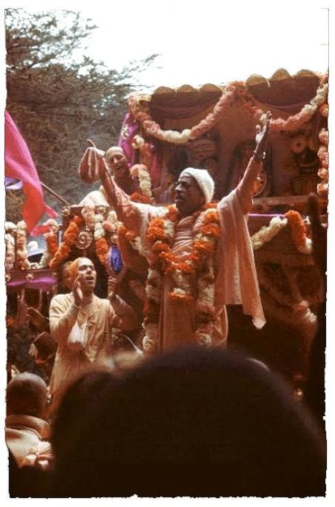

Courage?
Posted on : 2nd October, 2024

Last year in Śrī Jagganātha Rathyātra one devotee approache to give me a service of keeping devotees away at a safe distance from the wheels of Lord's chariot, I started walking along with the chariot near the wheels, carrying a danda to control the crowd, then among the devotees who were pulling the ratha he turns back and randomly says to me “Prabhupāda.. How courageous he must be that he started celebrating this festival in the Western countries?”. “yes very much, after all he is he himself only he could do that” I replied smiling, he smiled back.
After walking some distance, suddenly a question striked in my mind “Does he need Courage to do this?” I looked back at the photo of Śrīla prabhupāda on the chariot, his face radiating with so much glory and sweetness answered me that it wasn't courage it was his Love towards the Supreme Lord Śri Krsna, that single handedly he turned this world upside down broke all stereotype rules which were coming in between the lord and his devotees, on the day when His Divine Grace AC Bhaktivedānta Swāmi Śrīla Prabhupāda walked along with his disciples and the Supreme divine siblings Śrī Jagganātha, Baladeva and Subhadra on the streets of San Francisco in year 1967, the Lord of Universe jaga-n-nātha actually became Jagganātha in real sense as this was something which no one could have imagined in their 7 generations. Those who are in false conception of dharma and do not want to surpass this bodily consciousness still criticize Śrīla Prabhupāda's remarkable loving exchange with the Lord. It's a big misfortune that they are happy with reciving donations from non hindus but not allowing them to see the Lord in temple. Being an ācarya Śrīla Prabhupāda understood the mood of the Lord and pulled him out with intense force of love and gave Śrī Jagganātha to entire world.
Jay Śrīla Prabhupāda!
~ Admin